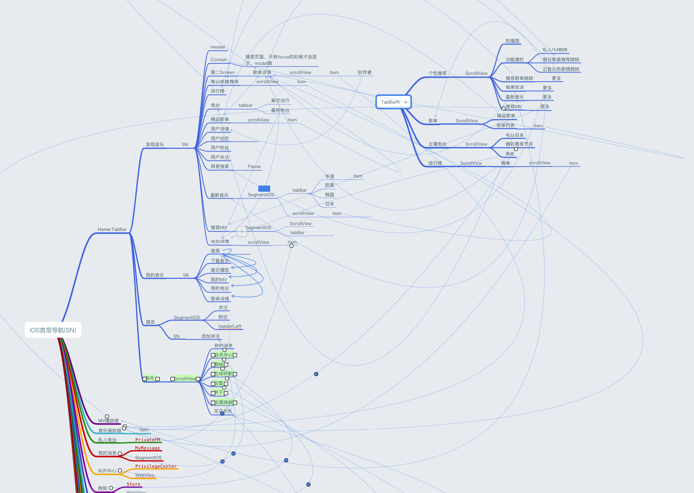

- 由于临近期末，只简单的实现了歌单以及排行榜的部分功能
- 相比于 用react 做的网易云音乐，这次的代码复用性更高，也做了几个可以复用的组件，比如swiper组件，还有向上拉更新组件
- 注意：由于使用的是react-native 0.50 版本， boost编译系统从0.44开始就被FB分离出来，如果 npm install 后仍然无法正常启动，可能是 因为boost ，或者部分lib被墙
- 如无法正常启动：下载无删减node modules 版本 百度云链接 密码：xxx
项目展示：

技术栈：react-native, redux, react-redux, react-native-video, react-native-scrollable-tab-view, react-native-router-flux
首先将react-native，和react-navigation的文档刷了一边，google查询了以下 RN 中 redux的用法和react 是否有出入，查完发现没有。
然后就上网开始找屏幕的配适方案，找了好几个，实验了下都不太满意，就将几个整合了一下
由于这个app的路由非常复杂，无可避免的需要使用react-redux和react-navigation配合使用， 嵌套了几层路由之后， 通过 dispatch 进行页面跳转时， 路由如下图：(图片为缩略图，用新标签打开放大观看)
发现跳转有时候并不灵 ， 然后看了看文档，起初以为是我 navigation reducer 写错了， 改了改没有好转 ， 然后以为是嵌套出错了 ，但是文档上只要Top-level Navigation出错并不会有太大的影响。 然后看了看 github 的 issue ，里面有一个关于嵌套的问题 ，然后又发了一封issue ，没有人回复（ - -！ 好吧，可能是我没有按照格式去写issue ）。然后又去社区发了一个贴，（依旧没有人回复，可能大家都很忙吧。。。）
耽误了两天解决问题，后来看了看一些issue ， 发现的确是嵌套的问题， 嵌套后需要将 子 路由的 router 赋值给 父路由的 router ，就像 dom 树一下 形成 router map 树 可是问题是 赋值过程会报错， issue里面说 这是一个 bug ，还没有修复 ，然后要安装另一个 lib ， 类似于 react-redux 里面 connect（）（componentUI） 一样去包裹一层就可以嵌套了（ p = p ）。。。。
然后就放弃了，然后又找了一个更加好用的 router lib ，react-native-scrollable-tab-view ，然后又一直写下去。。。。
写了一下发现 stack 嵌套 tab 的 navigationTab 做不出需要的效果，这是lib中tabNavigation的问题 ， 然后又找了一个专门的tab lib
安装完react-native-video ，后 app 启动不起来了，我的心里是 🌚🌚🌚🌚🌚🌚，然后删除了node modules，重新安装，依旧编译不起来🌚🌚🌚🌚🌚🌚。 折腾了好半天，然后弄好了🙆🏼
总之，踩坑无数。。。然后修了修componnet顺手写了个 😏 react-native-flexlayouthelper